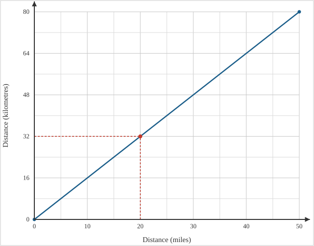

<script src="/assets/redirect.js"></script>
<section class="theory" data-section="IGCSE-13.4">
<h2>13.4 Conversion graphs</h2>
<p class="src">Based on Cambridge IGCSE Mathematics Core and Extended Coursebook, 3rd edition (Karen Morrison and Nick Hamshaw), Chapter 13 Understanding measurement, printed pp.418–420 (conversion graph of miles against kilometres, and Apply your skills). Printed pages were read from rendered scans of part_042 (printed 418–420). Own wording and new numbers.</p>
<p class="key-words"><strong>Key words:</strong> <em>conversion graph</em>, <em>conversion</em></p>
<h3>Reading a conversion graph</h3>
<p>A <strong>conversion graph</strong> is a straight-line graph that relates two quantities. Many of the graphs in this section pass through the origin: doubling one reading doubles the other. To change a value, go from the known axis to the line, then across or down to the other axis.</p>
<p>If the line passes through the origin and through a known point, you can also write a formula. In the graph below, the line goes through \(0\) miles \(=0\) km and \(50\) miles \(=80\) km, so \(1\) mile is \(\dfrac{80}{50}=\dfrac{8}{5}\) km. That is the same as \(8\) km for every \(5\) miles.</p>
<figure><figcaption>A conversion graph for miles and kilometres. The marked point shows that \(20\) miles is \(32\) km.</figcaption></figure>
<div class="worked-example">
<h4>Worked example 1: Reading from a conversion graph</h4>
<p class="src">Book: conversion graph of miles against kilometres, printed pp.418–419 (the book uses a different scale and different readings). New numbers, using the graph above.</p>
<p>The conversion graph is a straight line through \((0,0)\) and through the point \(50\) miles \(=80\) km.</p>
<p>(a) Change \(15\) miles into kilometres.<br/>(b) Change \(20\) miles into kilometres, as marked on the graph.</p>
<ol class="steps">
<li>The line gives \(5\) miles \(=8\) km, or \(1\) mile \(=\dfrac{8}{5}\) km. <span class="mark">M1</span></li>
<li>(a) \(15\) miles \(=15\times\dfrac{8}{5}=24\) km. <span class="mark">A1</span></li>
<li>(b) \(20\) miles \(=20\times\dfrac{8}{5}=32\) km, which matches the dashed reading on the graph. <span class="mark">A1</span></li>
</ol>
<p class="final"><strong>Answer:</strong> (a) \(24\) km (b) \(32\) km</p>
</div>
<div class="worked-example">
<h4>Worked example 2: Changing the other way</h4>
<p class="src">Book: Apply your skills style on printed p.420 (reading the graph in both directions). New numbers.</p>
<p>Using the same conversion graph, change \(48\) km into miles, and write a formula for the number of kilometres \(K\) in terms of the number of miles \(M\).</p>
<ol class="steps">
<li>From the line, \(8\) km \(=5\) miles, so \(1\) km \(=\dfrac{5}{8}\) of a mile. <span class="mark">M1</span></li>
<li>\(48\) km \(=48\times\dfrac{5}{8}=30\) miles. <span class="mark">A1</span></li>
<li>The formula is \(K=\dfrac{8}{5}M\). <span class="mark">B1</span></li>
</ol>
<p class="final"><strong>Answer:</strong> \(30\) miles; \(K=\dfrac{8}{5}M\)</p>
</div>
<h3>Common mistakes</h3>
<ul>
<li>Reading from the wrong axis, or mixing up which way the conversion runs.</li>
<li>Using a point that is not on the line, or treating a reading between grid lines as if it had to be an integer when the graph is being used only as a sketch check.</li>
<li>Forgetting that a line through the origin means the two quantities are in a constant ratio, so the same formula works in both directions.</li>
</ul>
<h3>Quick checks</h3>
<div class="quick-check">
<h4>Quick check 1</h4>
<p>A conversion graph is a straight line through \(0\) miles \(=0\) km and \(50\) miles \(=80\) km. Change \(10\) miles into kilometres.</p>
<details><summary>Worked solution</summary>
<ol class="steps">
<li>\(1\) mile \(=\dfrac{8}{5}\) km, so \(10\) miles \(=10\times\dfrac{8}{5}=16\) km <span class="mark">A1</span></li>
</ol>
<p class="final"><strong>Answer:</strong> \(16\)</p>
</details>
</div>
<div class="quick-check">
<h4>Quick check 2</h4>
<p>A conversion graph is a straight line through \(0\) miles \(=0\) km and \(50\) miles \(=80\) km. Change \(40\) km into miles.</p>
<details><summary>Worked solution</summary>
<ol class="steps">
<li>\(1\) km \(=\dfrac{5}{8}\) of a mile, so \(40\) km \(=40\times\dfrac{5}{8}=25\) miles <span class="mark">A1</span></li>
</ol>
<p class="final"><strong>Answer:</strong> \(25\)</p>
</details>
</div>
<div class="quick-check">
<h4>Quick check 3</h4>
<p>A conversion graph is a straight line through \(0\) miles \(=0\) km and \(50\) miles \(=80\) km. Change \(45\) miles into kilometres.</p>
<details><summary>Worked solution</summary>
<ol class="steps">
<li>\(1\) mile \(=\dfrac{8}{5}\) km, so \(45\) miles \(=45\times\dfrac{8}{5}=72\) km <span class="mark">A1</span></li>
</ol>
<p class="final"><strong>Answer:</strong> \(72\)</p>
</details>
</div>
<p class="marks-key"><strong>Marks:</strong> M = method, A = accurate answer (depends on M), B = independent mark. Leave exact values exact.</p>
</section>
